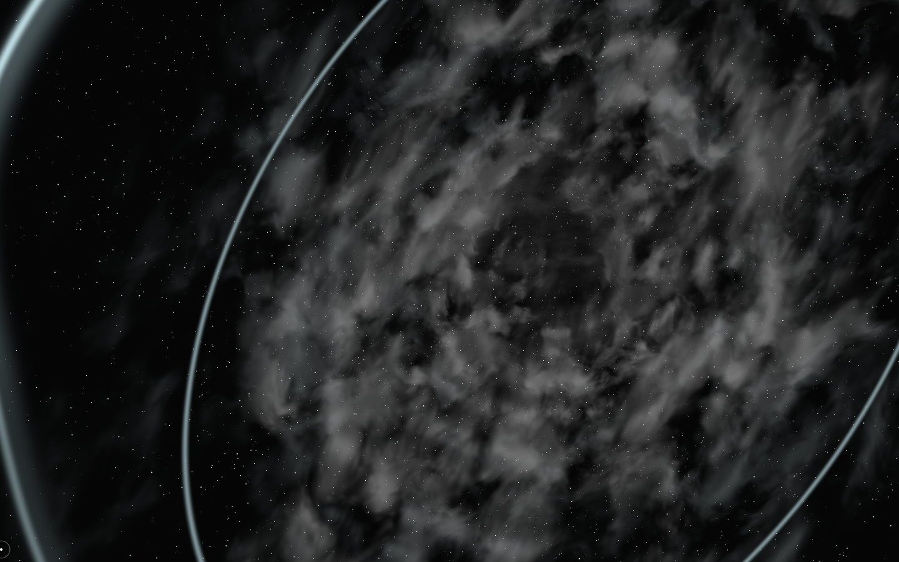
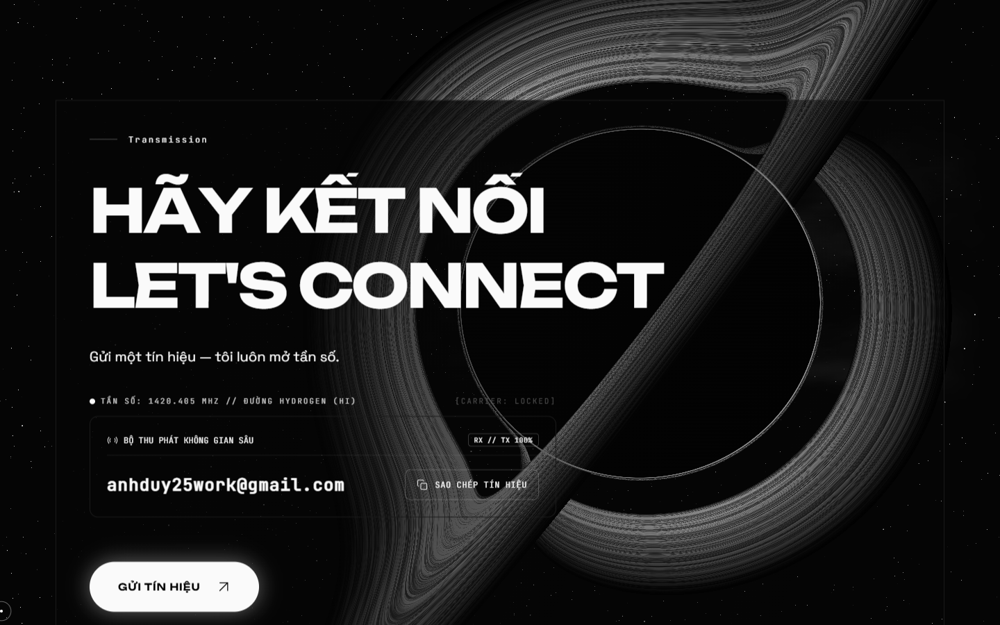
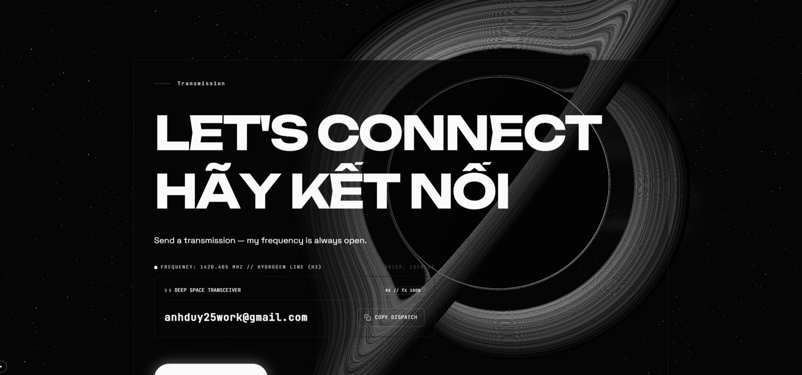
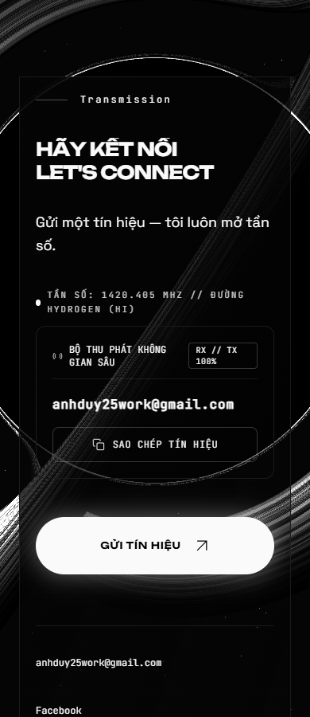
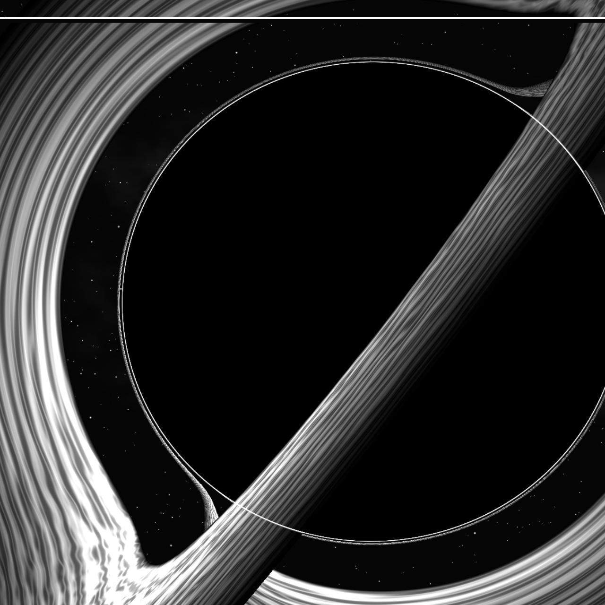
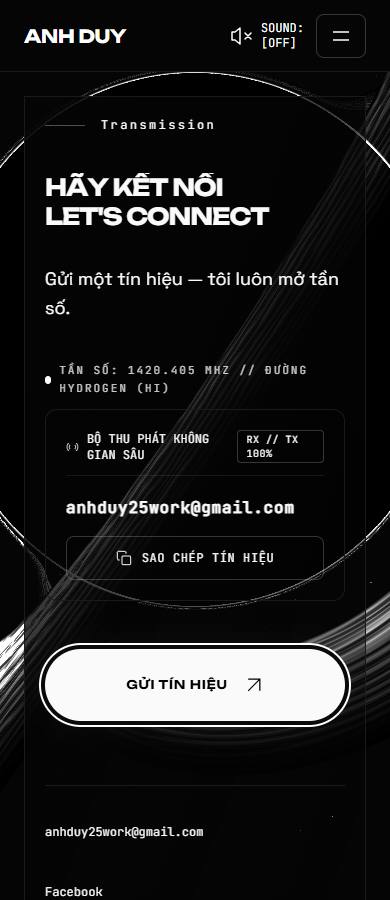

Stellar Odyssey · V9 · 13/10/2026 · G2 đã duyệt
Va chạm → hố đen → Contact
Bản tích hợp để duyệt G3. Video và ảnh dưới đây được ghi trực tiếp từ ứng dụng. Cuộn 400vh điều khiển toàn bộ chuỗi; cuộn ngược hoàn nguyên ba chòm sao và lựa chọn dự án.
Performance chưa nghiệm thu. Intel UHD 630, 1440×900, DPR 1: nổ khoảng 60 FPS; hình thành đĩa 21 FPS; Contact với lõi lớn 16 FPS. Độ nét HDR được giữ nguyên. Chưa đo điện thoại thật. G3 duyệt visual; V10 chỉ bắt đầu sau khi bạn duyệt.
Toàn chuỗi — tiến rồi lùi
Core sáng tập trung, wave vượt mép khung; khí và hạt trở lại cùng tâm để tạo disk. Đĩa khí ambient tiếp tục chuyển động khi dừng cuộn; trạng thái vụ nổ giữ theo progress.
So từng checkpoint

Hố đen giữ lớn khi Contact vào cảnh

1440px: lõi tối khoảng 55,7% chiều cao; cùng kích thước ở p=.96 và Contact.
1920px: khoảng 56,2%. Giữ nguyên copy, layout, terminal và các hành động.Màn hình dọc

390px: lõi khoảng 59,2% chiều cao; có crop ngang có chủ đích. Đây là viewport desktop, không phải phép đo điện thoại thật.Chi tiết HDR và reduced-motion/fallback

Crop screenshot thực ở DPR 1,75. HDR target 3360×1575 bằng drawing buffer; mỗi frame chỉ một ray pass.
Reduced-motion bỏ chuỗi nổ/zoom, finale 0vh, Contact đọc và focus được.